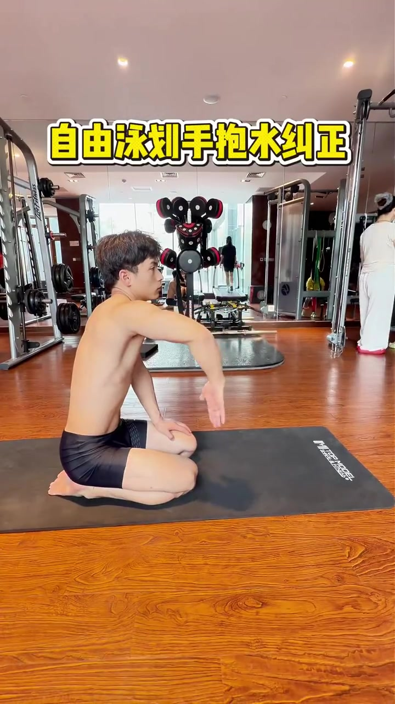
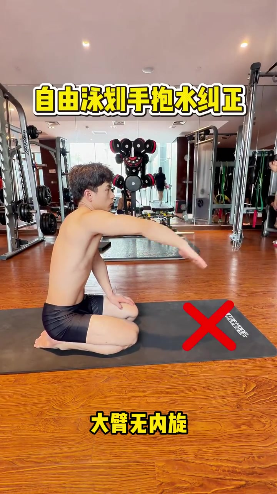
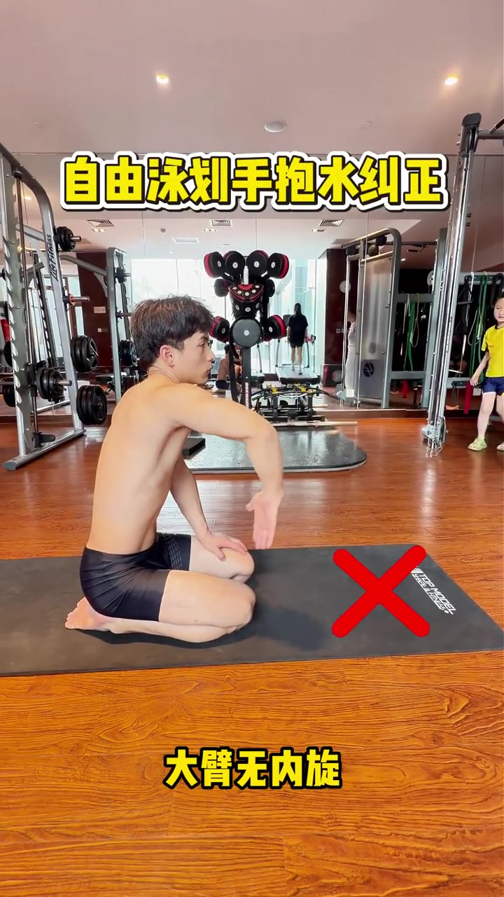
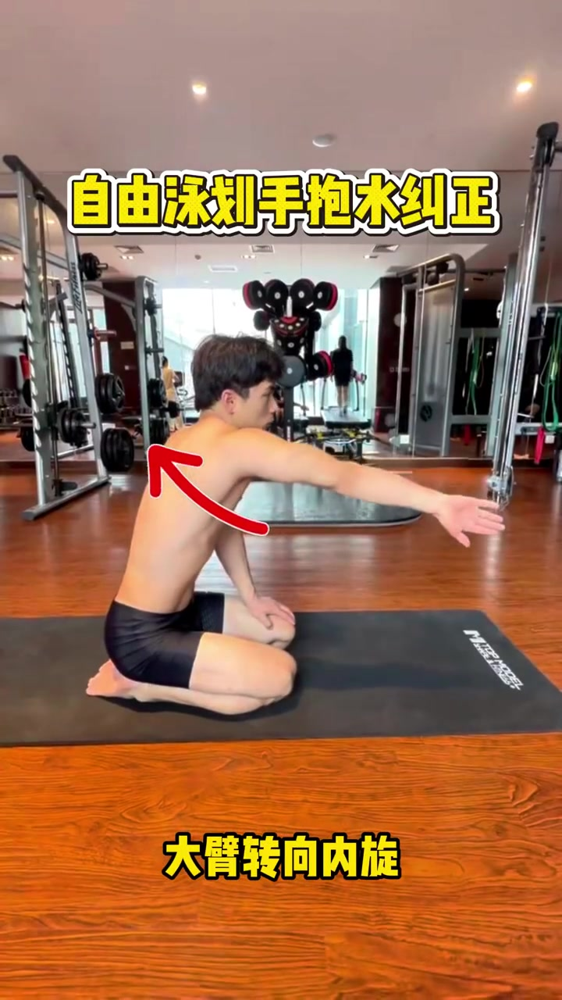
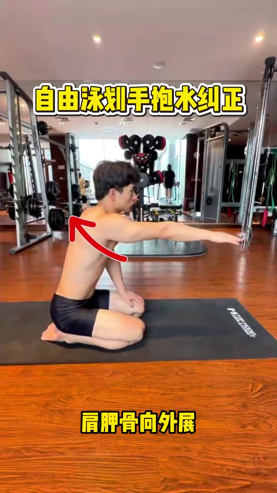
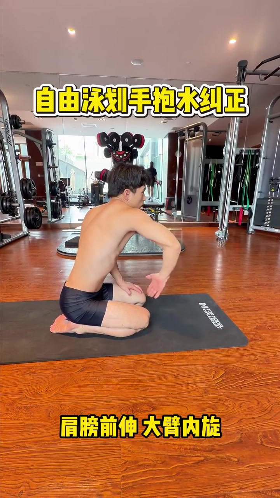
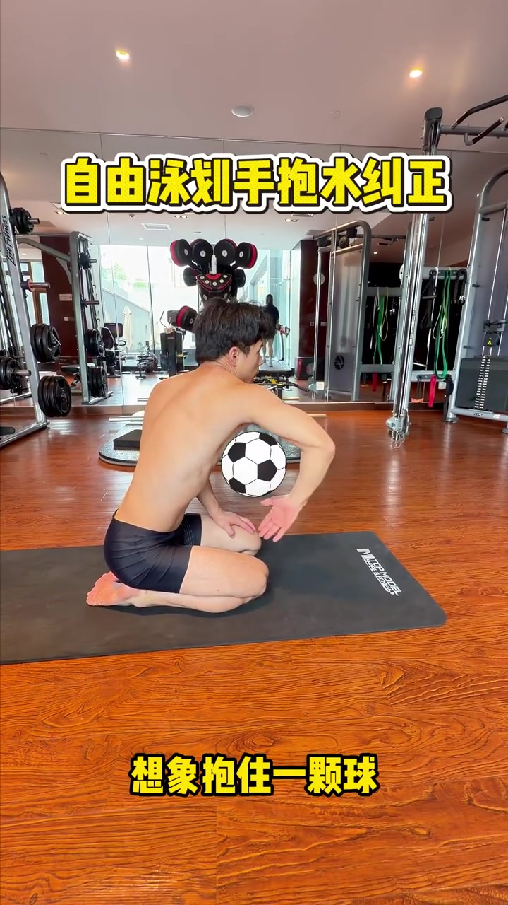

开场 · 00:00
把题目钉在画面上方
镜头落在健身房木纹地板上：作者赤膊跪在黑色瑜伽垫上，侧向镜头伸出右臂做自由泳抱水的陆上动作。顶部黄字大标题直接点题——「自由泳划手抱水纠正」。17 秒几乎没有可辨口播，信息主要靠画面大字、红叉、红色箭头和足球图示推进。
本片配乐较强、口播不可辨。Whisper 原始识别曾出现字幕署名幻觉，页末转录按「[听不清]」保留原始分段时间轴。正文依据画面叠加字展开，不补写未说出的口播。

错误演示 · 00:02
先立靶：大臂无内旋
约两秒处，底部黄字出现「大臂无内旋」，垫子前方同时落下大红叉。作者右臂平伸、掌心朝下，肩肘几乎一条直线——画面明确把「只把胳膊往前伸、大臂不做内旋」标成错误抱水起点。

继续纠错 · 00:04
弯肘也不等于抱水对了
接下来作者把右肘弯成约 90 度，前臂垂下、掌心朝后，底部仍写着「大臂无内旋」，红叉继续在场。视频强调：只把肘弯起来、大臂没有内旋，仍然不是正确抱水——弯肘本身不是充分条件。

纠正动作 · 00:06
大臂转向内旋
红叉消失，肩部出现弯曲红色箭头，底部文字换成「大臂转向内旋」。作者右臂仍前伸，箭头提示大臂要向内旋转——这是视频给出的第一个正向动作指令：先让大臂内旋，再谈抱水形状。

连带动作 · 00:08
肩胛骨向外展
随后背部出现指向右肩的红箭头，底部文字切换为「肩胛骨向外展」。镜头仍是跪姿侧向伸臂，提示抱水不只是胳膊在转，肩胛要配合外展/前伸，把肩带打开，给大臂内旋和前伸腾出空间。

正确抱水 · 00:10
肩膀前伸 + 大臂内旋
约十秒处进入正确抱水定格：右肩明显前伸，大臂内旋，肘部抬高，前臂与手掌朝向身侧下方，像在水下「卡住」水面。底部黄字收成两句口诀——「肩膀前伸 大臂内旋」。到这里，错误（无内旋）与正确（前伸+内旋）已经并排说清。

体感口诀 · 00:14
想象抱住一颗球
收尾两秒，画面在胸口与弯臂之间叠上一颗黑白足球图示，底部文字变成「想象抱住一颗球」。作者维持高肘、前臂环抱的空间感——把抽象的内旋/前伸，收成一个可立刻试做的体感：肘腕之间像抱着一颗球。

17 秒发生了什么
视频用陆上跪姿把自由泳抱水拆成「错 → 仍错 → 转 → 展 → 对 → 体感」六步：红叉否定无内旋与空弯肘，红箭头补上大臂内旋与肩胛外展，最后用「肩膀前伸 + 大臂内旋」和「想象抱球」锁住正确形状。